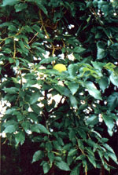

This tree-once a favorite of American settlers-deserves a look from modern-day homesteaders
"Good fences make good neighbors," wrote poet Robert Frost. But what, exactly, makes a good fence?
If you've ever had the dubious pleasure of putting a fence up-of cutting, splitting, and setting posts and stretching wire-you just might answer, "A fence that builds itself." And since you're fantasizing, you might add, . . . and takes care of itself, too."
Well, believe it or not, there is such a fence. Chances are you've seen one while driving along rural roads and looking out over neat hedgerow-lined fields. During the latter half of the nineteenth century and the first few decades of this one-up until the time barbed wire became widely available and inexpensive-settlers and farmers throughout much of the eastern half of the United States planted their fences.
More often than not, the tree they used was Osage orange, sometimes also called prairie hedge, hedge apple, horse apple, bowwood, or yellow-wood. Most folks today, though, know it only for its distinctly ugly, almost otherworldly-looking fruit: an inedible, fleshy green orb the size of a grapefruit or large orange, with a warty, furrowed surface sparsely covered with long, coarse hairs. When you break the globe open, it exudes a bitter, milky, sticky sap that eventually turns black and that gives some people an irritating rash.
But beauty, after all, is in the eye of the beholder, and any homesteader who places greater value on usefulness than on appearance will find much, to admire in the Osage orange.
Osage (Maclura pomifera) is the sole surviving member of the genus Maclura-of its many relatives from past geologic eras, only fossils remain. It is also, however, a member of the family Moraceae, which encompasses the mulberries and the figs, as well as a large number of tropical and semitropical trees.
When mature, the Osage orange measures from 10 to 50 feet tall and has a trunk 1 to 2 feet in diameter. Its branches form an even, round crown, unless the trees are growing closely together in a hedge and don't have room to spread naturally. Between May and July, the species sports tiny greenish flowers.
Other distinguishing characteristics of the Osage orange include deeply furrowed, braidedlooking, dark orange bark ... long (3"-5"), shiny, egg-shaped, dark green leaves, which are pointed at one end . . . and (perhaps most significantly) many sharp, steel strong thorns that make this tree a formidable barrier, to say the least.
But Osage orange's value extends well beyond its use as a living hedge.
When early French settlers ventured west of the Mississippi River-into what is now eastern Texas and Oklahoma and western Arkansas-they encountered the Osage Indians, who were known far and wide for making bows that were superior weapons for fighting and hunting. The unusual tree that the Osage used for making their bows was unknown to the French, who promptly dubbed it bois d'arc, or "wood of the bow." Later pioneers corrupted the name to bowdark, and eventually came to call it bowwood.
In fact, it didn't take the early pioneers long to acknowledge that Osage orange was a valuable timber resource. Because of its great strength and durability, the settlers used the newly discovered tree in nearly every application that required a tough, tenacious wood.
The hubs and rims of the wheels on farm wagons, covered wagons, and chuck wagons were made from Osage. Its great strength enabled it to bear heavy loads, while its flexibility made it relatively easy to bend into the circle of a wheel rim and also gave it the capacity to absorb shock without cracking or splitting. Those properties, added to the wood's ability to resist the effects of soil and moisture, made for high-mileage wheel rims.
Unfortunately, the wood's extraordinary ability to resist rot also put the tree in great demand, causing the huge native stands of Osage orange growing in the bottomlands of Texas, Oklahoma, and Arkansas to be harvested wholesale for use as fence posts and railroad ties. Osage orange might have ended up being a very rare sight for most Americans were it not for its suitability as a hedge. The plant met all of the qualifications: It was "horse-high, bull-strong, and pig-tight." The tree was easily propagated from seed, and grew fast. In a few years, it would form a hedge almost tight enough to hold water. Any spaces between the trees would be screened by the Osage's thick, thorny branches. And since the trees propagate by sending up shoots from their roots, all the holes would eventually fill in with new trees.
If planted close together, Osages would grow only to about 20 or 30 feet, never attaining the height of most deciduous trees. Consequently, they made perfect field borders: They could contain livestock without shading crops excessively. Besides, it was a lot easier to plant trees in lines around fields and pastures than it was to erect and maintain rail or stockade fences.
As a result, thousands of miles of Osage hedges were planted in the Midwest, East, and South, far beyond the original range of the species. The tree was hardy and adapted well to new surroundings, and today it can be found growing (mostly in hedges) from the Great Plains to the Eastern Seaboard, from the Great Lakes to the Gulf of Mexico.
Although not commmonly used for fencing anymore (some people claimed that, once established, the trees were hard to control and that their thorns sometimes injured livestock), the stands of Osage planted fifty to a hundred years ago remain a valuable resource. Some farmers still utilize them as natural enclosures, and many more use the trees for making exceptionally long-lasting fence posts. Crafts people-woodworkers and those who make and use natural dyes-hold the Osage orange in high esteem. And, perhaps most important, the trees serve as windbreaks and as badly needed cover for wildlife.
If Frost was right in saying that "good fences make good neighbors," then the Osage is truly remarkable . . . because it is both a good fence and a good neighbor, to man and beast alike.
EDITOR'S NOTE: Although it is very hardy, Osage orange does require a good, deep topsoil. Seeds are available from the F. W. Schumacher Company, Sandwich, MA 02563, 617/888-0659. Seedlings can be ordered from Musser Forests, Inc., P.O. Box 340, Indiana, PA 15701, 412/465-5685.
|
 |
|
|